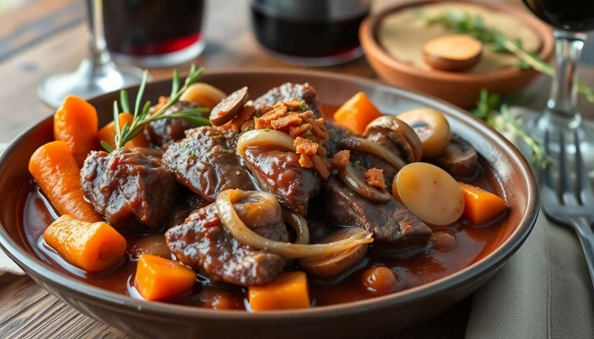
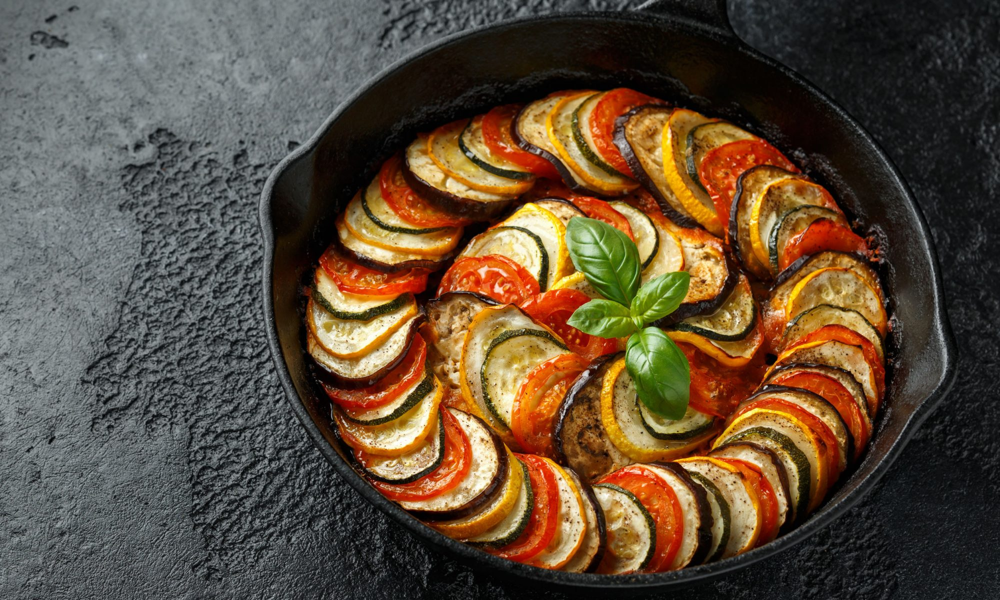
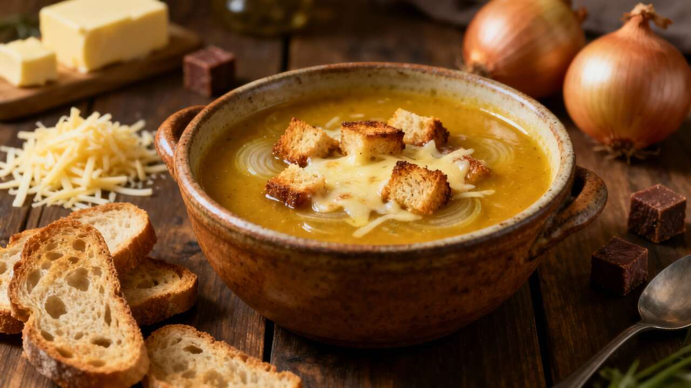

Традиционни ястия в Франция
1. Бургундско говеждо (Boeuf Bourguignon)
Емблематично задушено ястие от крехко говеждо месо, приготвено в гъст сос от червено бургундско вино, гарнирано с гъби, моркови, лук и бекон. Тайната му е в бавното готвене.

2. Рататуй (Ratatouille)
Традиционно за Прованс постно ястие. Представлява перфектно аранжиран микс от печени или задушени зеленчуци – патладжани, тиквички, чушки, домати, лук и чесън, подправени с пресни билки.

3. Лучена супа (Soupe à l'oignon)
Класика от Париж, направена от карамелизиран лук и телешки бульон. Сервира се гореща, гарнирана с хрупкави крутони и обилно количество разтопено сирене Грюйер отгоре.

4. Крем брюле (Crème Brûlée)
Най-обичаният френски десерт. Нежен, кадифен ванилов крем от жълтъци и сметана, покрит с тънък слой хрупкав, перфектно карамелизиран захарна коричка.